Explainable AI_P2: Why Does a Cat Look Like (for a Model)（已整理）¶
约 4374 个字 预计阅读时间 15 分钟
Global Explanation: Explain the whole Model¶
Global 的 Explanation 是什么意思呢，我们在前一堂课讲的是 Local 的 Explanation，也就是给机器一张照片，那它告诉我们说，看到这张图片，它为什么觉得里面有一只猫
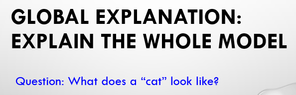
而 Global 的 Explanation 并不是针对特定某一张照片来进行分析，而是把我们训练好的那个模型拿出来，根据这个模型里面的参数去检查说，对这个 Network 而言，到底一只猫长什么样子
What does a filter detect?¶
举例来说，假设你今天 Train 好一个 Convolutional 的 Neural Network，那你知道在 Convolutional Neural Network 里面有很多的 Filter，有很多的 Convolutional Layer
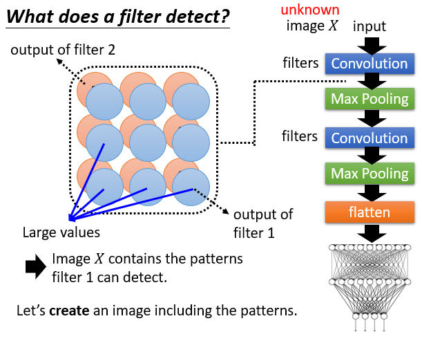
Convolutional Layer 里面有一堆的 Filter，那你把一张图片作为输入，Convolutional 的 Layer 的输出是一个 Feature Map，那每一个 Filter 都会给我们一个 Metric。
那今天呢，假设我们有一张图片作为这个 Convolutional Neural Network 的输入，这张图片我们用一个大写的 X 来表示，如果把这张图片丢进去，你发现某一个 Filter，比如说 Filter 1，它在它的 Feature Map 里面，很多位置都有比较大的值，那可能就是意味着说，这个 Image X 里面有很多 Filter 1 负责侦测的那些特征，这个 Image 里面有很多的 Pattern 是 Filter 1 负责侦测的，那 Filter 1 看到这些 Pattern，所以它在它的 Feature Map 上，就 Output 比较大的值
但是现在我们要做的是 Global 的 Explanation，也就是我们还没有这张图片 Image X，我们没有要针对任何一张特定的图片做分析，但是我们现在想要知道说，对 Filter 1 而言，它想要看的 Pattern 到底长什么样子，那怎么做呢
我们就去制造出一张图片，它不是我们的 Database 里面任何一个特定的图片，而是机器自己创造出来的，我们要创造一张图片，这张图片包含 Filter 1 要 Detect 的 Pattern，那看这张图片里面的内容，我们就可以知道 Filter 1 它负责 Detect 什么样的东西
那怎么找这张图片呢，我们假设它是这个 Filter 1 的 Feature Map，里面的每一个 Element 叫做 \(a_{ij}\)
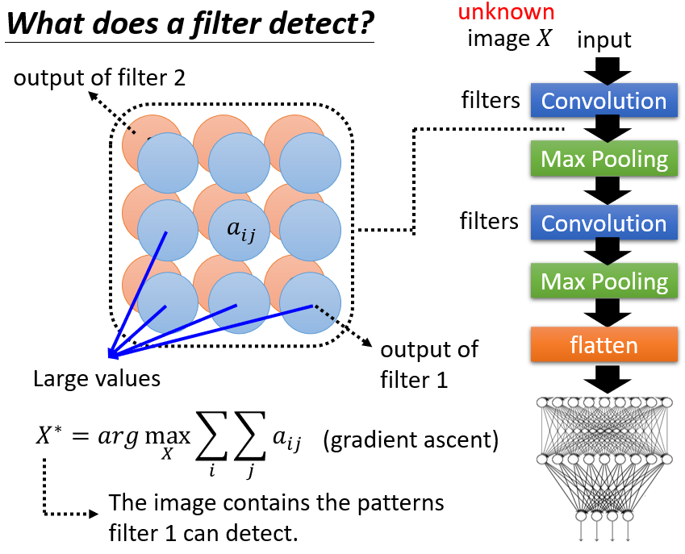
那我们现在要做的事情是找一张图片 X，这张图片不是 Database 里面的图片，而是我们把这个 X，当做一个 Unknown Variable，当做我们要训练的那个参数，我们去找一张图片，这张图片丢到 Filter 以后，通过 Convolutional Layer 以后，输出这个 Feature Map 以后，Filter 1 对应的 Feature Map 里面的值，也就是 \(a_{ij}\) 的值越大越好，所以我们要找一个 X，让 \(a_{ij}\) 的总和，也就是 Filter 1 的 Feature Map的 Output，它的值越大越好，那我们找出来的这个 X，我们就用 \(X^⋆\) 来表示
它不是 Database 里面任何一张特定的图片，我们是把 X 当作 Unknown Variable，当作要 learn 的参数，去找出这个 \(X^⋆\)
那怎么解这个问题呢，因为我们现在是要去 Maximize 某一个东西，所以它是 Gradient ascent，不过原理跟 Gradient descent 是一样的
那我找出这个 \(X^⋆\) 以后，我们就可以去观察这个 \(X^⋆\)，那看看 \(X^⋆\) 有什么样的特征，我们就可以知道说，\(X^⋆\) 它可以 Maximize 这个 Filter Map 的 value，也就是 Filter 1 它在 Detect 什么样的 Pattern
那这边是一个实际操作的结果了，我们就用这个 Mnist，Mnist 是一个手写数字辨识的 Corpus（语料库），用 Mnist 训练出一个 Classifier，给 Classifier 一张图片，它会判断这张图片里面是 1~9 中的哪一个数字
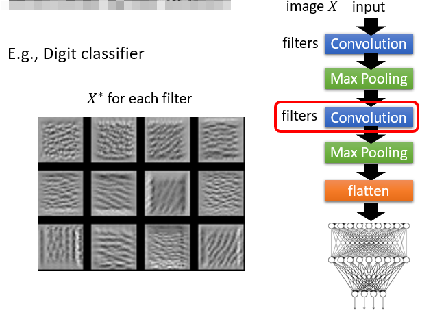
训练好这个数字的 Classifier 以后呢，我们就把它的第二层的 Convolutional Layer 里面的 Filter（下一层的第三维需要输入的维度就是这一层 Filter 卷积核的个数）拿出来，然后找出每一个 Filter 对应的 \(X^⋆\)，所以下面这边每一张图片，就是一个 \(X^⋆\)，然后每一张图片都对应到一个 Filter
那所以你可以想象说，这个第一张图片就是 Filter 1，它想要 Detect 的 Pattern，第二张图片，就是 Filter 2 想要 Detect 的 Pattern，以此类推，那这边是画了 12 个 Filter 出来
那从这些 Pattern 里面，我们可以发现什么呢，我们可以发现说，这个第二层的 Convolutional，它想要做的事情确实是去侦测一些基本的 Pattern，比如说类似笔画的东西
右下角这个 Filter，它想侦测斜直线 Pattern，左下角这个 Filter，它想要侦测直线 Pattern，每一个 Filter 都有它想要侦测的 Pattern，那因为我们现在是在做手写的数字辨识，那你知道数字就是由一堆笔画所构成的，所以 Convolutiona Layer 里面的每一个 Filter，它的工作就是去侦测某一个笔画，这件事情是非常合理的
What does a digit look like for CNN?¶
那接下来你可能就会去想说，那假设我们不是看某一个 Filter，而是去看最终这个 Image Classifier 的 Output可不可以呢，那我们会观察到什么样的现象呢
如果我们今天是去看这个 Image Classifier 的 Output，我们想办法去找一张图片 X，这个 X 可以让某一个类别的分数越高越好，因为我们现在做的是数字辨识，所以这个 y 总共就会有 10 个值，分别对应到 0~9，那我们就选某一个数字出来
比如说你选数字 1 出来，然后你希望找一张图片，这张图片丢到这个 Classifier 以后，数字 1 的分数越高越好，那如果你用这个方法，你可以看到什么样的东西呢，你可以看到数字 0~9 吗，你实际上做一下以后发现，没有办法，你看到的结果大概就像是这个样子
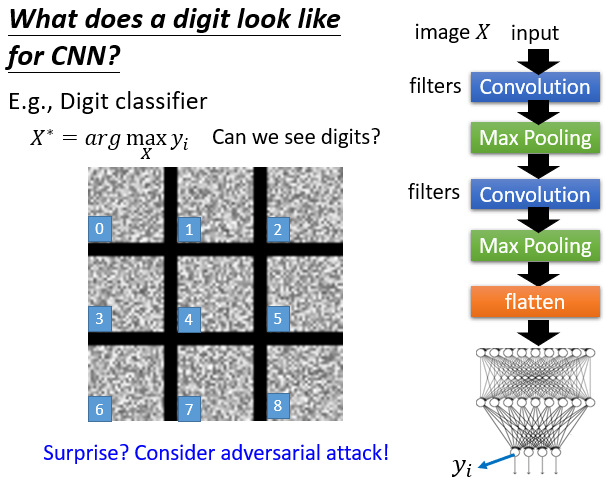
这张左下角是 0 的图片，它可以让这个 Image Classifier，觉得看到数字 0 的分数最高，这张图片可以让你的这个 Classifier觉得看到 1 的分数最高，2 的分数最高，3 的分数最高，以此类推，你会发现说你观察到的，其实就是一堆杂讯，你根本没有办法看到数字
那这个结果，假设我们还没有教 Adversarial Attack，你可能会觉得好神奇，怎么会这个样子，机器看到一堆是杂讯的东西，它以为它看到数字吗，怎么会这么愚蠢，但是因为我们已经教过 Adversarial Attack，所以想必你其实不会太震惊，因为我们在做 Adversarial Attack 的时候，我们就已经告诉你说，在 Image 上面加上一些，人眼根本看不到的奇奇怪怪的杂讯，就可以让机器看到各式各样的物件
那所以这边也是一样的道理，对机器来说，它不需要看到真的很像 0 那个数字的图片，它才说它看到数字 0，你给它一些乱七八糟的杂讯，它也说看到数字 0，而且它的信心分数是非常高的
那所以其实如果你用这个方法，想用这种找一个图片，让 Image 的输出某一个对应到某一个类别的输出越大越好这种方法，其实不一定有那么容易
那像今天这个例子，今天这个手写数字辨识的例子，你单纯只是找说，我要找一张 Image，让对应到某一个数字的信心分数越高越好，你找到的只会是一堆杂讯，怎么办呢
假设我们希望我们今天看到的，是比较像是人想象的数字，应该要怎么办呢，你在解这个 Optimization 的问题的时候，你要加上更多的限制，举例来说，我们先对这个数字已经有一些想象，我们已经知道数字可能是长什么样子，我们可以把我们要的这个限制，加到这个 Optimization 的过程里面
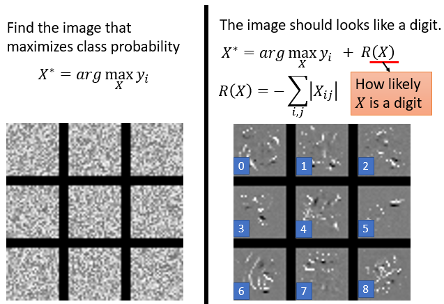
举例来说，我们现在不是要找一个 X，让 \(y_i\) 的分数最大，而是要找一个 X，同时让 \(y_i\) 还有 \(R( X)\) 的分数都越大越好，那这个 \(R( X)\) 是什么意思呢，这个\(R( X)\)是要拿来衡量说，这个 X 有多么像是一个数字
举例来说，今天数字就是由笔画所构成的，所以一个数字它在整张图片里面，它有颜色的地方其实也没那么多，这一个图片很大，那个笔画就是几画而已，所以在整张图片里面，有颜色的地方没有那么多，所以我们可以把这件事情当做一个限制，硬是塞到我们找 X 的这个过程中，期望借此我们找出来的 X，就会比较像是数字
举例来说，我们希望白色的点越少越好，那假设我们加上一个限制希望白色的点越少越好的话，那我们看到的结果会是这个样子，但看起来还是不太像数字了，不过你仔细观察白色的点的话，还真有那么一点样子，比如说这个有点像是 6，这个有点像是 8
那如果你要真的得到，非常像是数字的东西，或者是假设你想要像那个文献上，你知道文献上有很多人都会说，他用某种这个 Global Explanation 的方法，然后去反推一个 Image classifier，它心中的某种动物长什么样子
比如说你看下面这篇文献，它告诉你说，它有一个 Image classifier，它用我们刚才提到的方法，可以反推这个 Image classifier 心中的这个丹顶鹤长什么样子
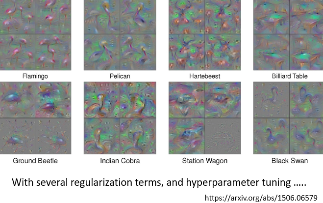
或它心中的甲虫长什么样子，来看这些图片，这个真的都还蛮像丹顶鹤的
但是要得到这样子的图片，其实没有想象的那么容易，如果仔细去看这个文献的话，就会发现说要得到这些图片必须要下非常多的 Constraint，你要根据你对一个 Object 长什么样子的了解，下非常多的限制，再加上一大堆的 Hyperparameter Tuning，你知道我们解 Optimization Problem 的时候，也是需要这个调 Hyperparameter，比如说 Learning rate 之类的，所以下一堆 Constraint，调一堆参数，你才可以得出这样的结果，所以这样的结果并不是随随便便就可以轻易的做出来的
Constraint from Generator¶
好像刚才讲的那种 Global Explanation 的方法，如果你真的想要看到非常清晰的图片的话，现在有一个招数是使用 Generator，你就训练一个 Image 的 Generator
你有一堆训练资料，也就是一堆 Image，你拿这一堆 Image 来训练一个 Image 的 Generator，比如说你可以用 GAN，可以用 VAE 等等，反正就是你可以想办法训练出一个 Image 的 Generator
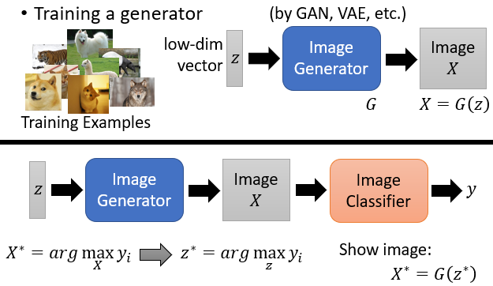
-
Image Generator 的输入是一个 Low-dimensional 的 Vector，是一个从 Gaussian distribution 里面 Sample 出来的低维度的向量，叫做 \(z\)
-
丢到这个 Image Generator 以后呢，它输出就是一张图片 \(X\)，那这个 Image Generator，我们用 \(G\) 来表示，那我们就可以写成 \(X = G(z)\)
那怎么拿这个 Image Generator，来帮助我们反推一个 Image classifier 里面所想象的某一种类别长什么样子呢？
-
那你就把这个 Image Generator，跟 Image classifier 接在一起，这个 Image Generator 输入是一个 \(z\)，输出是一张图片
-
然后这个 Image classifier，把这个图片当做输入，然后输出分类的结果，那在刚才前几页投影片里面，我们都是说我们要找一个 \(X\)，让 \(y\) 里面的某一个类别的信心分数越高越好，那我们说这个 \(X\) 叫做 \(X^⋆\)
那我们刚才也看到说光这么做，你往往做不出什么特别厉害的结果，现在有了 Image Generator 以后，方法就不一样了，我们现在不是去找 \(X\)，而是去找一个 \(z\)，我们要找一个 \(z\)，这个 \(z\) 通过 Image Generator 产生 \(X\)，再把这个 \(X\) 丢到 Image classifier，去产生 \(y\) 以后，希望 \(y\) 里面对应的某一个类别，它的分数越大越好
我们
- 找一个 \(z\)
- \(z\) 产生 \(X\)
- \(X\) 再产生 \(y\) 以后
- 希望 \(y_i\) 越大越好
那这个可以让 \(y_i\) 越大越好的 \(z\)，我们就叫它 \(z^⋆\)，找出这个 \(z^⋆\) 以后，我们再把这个
- \(z^⋆\) 丢到 G 里面，丢到 Generator 里面，看看它产生出来的 Image \(X^⋆\) 长什么样子
那找出来的 \(X^⋆\) 长什么样子呢
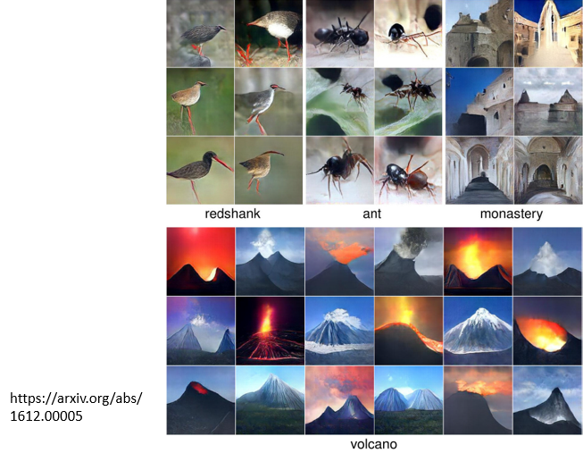
假设你今天想要产生，比如说让蚂蚁的信心分数最高的 Image，那产生出来的蚂蚁的照片长得是这个样子，都看得出这个就是蚂蚁。
或者是要让机器产生火山的照片，产生一堆照片，丢到 Classifier 以后，火山的信心分数特别高的，那确实可以找出一堆 Image，这些 Image 一看就知道像是火山一样。
但讲到这边你可能会觉得，这整个想法听起来有点强要，就是今天，你找出来的图片，如果跟你想象的东西不一样，今天找出来的蚂蚁火山跟你想象不一样，你就说这个 Explanation 的方法不好，然后你硬是要弄一些方法去找出来那个图片，跟人想象的是一样的，你才会说这个 Explanation 的方法是好的
那也许今天对机器来说，它看到的图片就是像是一些杂讯，也许它心里想象的某一个数字，就是像是那些杂讯一样，那我们却不愿意认同这个事实，而是硬要想一些方法让机器产生出看起来比较像样的图片
那今天 Explainable AI 的技术，往往就是有这个特性，我们其实没有那么在乎，机器真正想的是什么，其实我们不知道机器真正想的是什么，我们是希望有些方法解读出来的东西，是人看起来觉得很开心的，然后你就说，机器想的应该就是这个样子，今天 Explainable AI 往往会有这样的倾向。
Concluding Remarks¶
那我们今天就是跟大家介绍了 Explainable AI 的两个主流的技术，一个是 Local Explanation，一个是 Global Explanation
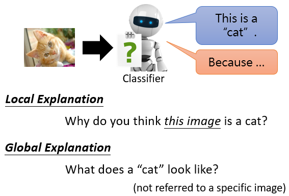
其实 Explainable 的 Machine Learning，还有很多的技术，这边再举一个例子，举例来说，你可以用一个比较简单的模型想办法去模仿复杂的模型的行为
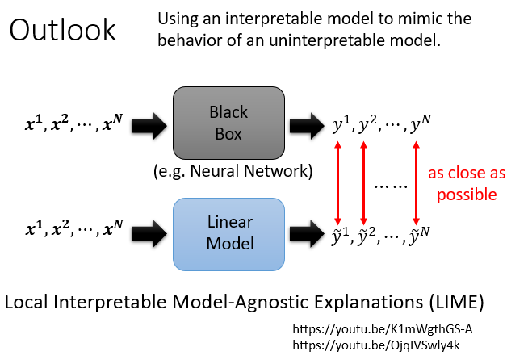
如果简单的模型可以模仿复杂模型的行为，你再去分析那个简单的模型，也许我们就可以知道那个复杂的模型在做什么。举例来说，你有一个 Neural Network，因为它是一个黑盒子，你丢一堆 x 进去，比如说丢一堆图片进去，它会给我们分类的结果
但我们搞不清楚它决策的过程，因为 Neural Network 本身非常地复杂，那我们能不能拿一个比较简单的模型出来，比较能够分析的模型出来，拿一个 Interpretable 的模型出来，比如说一个 Linear Model，然后我们训练这个 Linear Model，去模仿 Neural Network 的行为，Neural Network 输入 \(x_1 到 x_N\)，它就输出 \(y_1 到 y_N\)，那我们要求这个 Linear Model，输入的 \(x_1 到 x_N\)，也要输出跟 Black box 一模一样的 \(y_1 到 y_N\)
我们要求这个 Linear 的 Model，去模仿黑盒子的行为，那如果 Linear 的 Model，可以成功模仿黑盒子的行为，我们再去分析 Linear Model 做的事情，也许我们就可以知道这个黑盒子在做的事情
当然这边你可能会有非常非常多的问题，举例来说，一个 Linear 的 Model，有办法去模仿一个黑盒子的行为吗，我们开学第一堂课就说过说，有很多的问题是 Neural Network 才做得到，而 Linear 的 Model 是做不到的，所以今天黑盒子可以做到的事情，Linear 的 Model 不一定能做到，没错，在这一系列的 work 里面，有一个特别知名的叫做，Local Interpretable Model-Agnostic Explanations，它缩写是LIME
像这种方法，也没有说它要用 Linear Model 去模仿黑盒子全部的行为，它有特别开宗明义在名字里面就告诉你说它是 Local Interpretable，也就是它只要 Linear Model 去模仿这个黑盒子，在一小个区域内的行为，因为 Linear Model 能力有限，它不可能模仿整个 Neural Network 的行为，但也许让它模仿一小个区域的行为，那我们就解读那一小个区域里面发生的事情，这个是一个非常经典的方法，叫做 LIME，如果你想知道 LIME 是什么的话，你可以看以下的录影，今天我们不再细讲。
本文总阅读量次